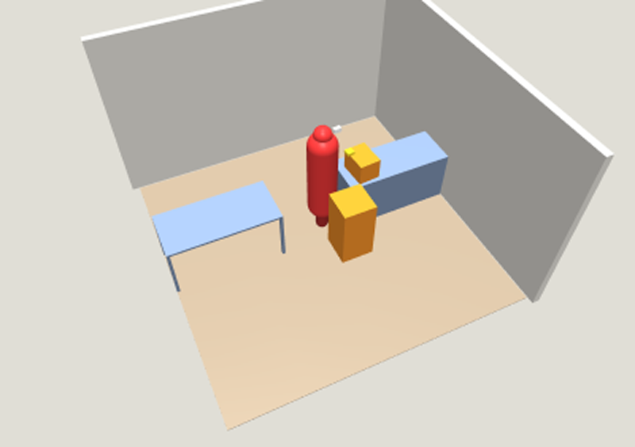
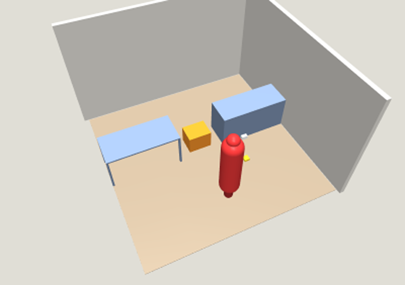
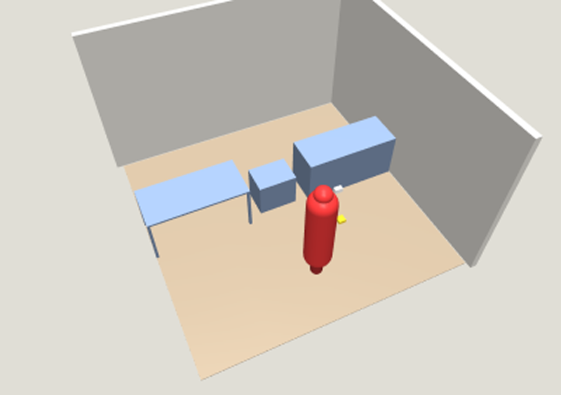

RealGrounds
01 / 06
The problem
AI can see the world.
But can it predict what happens next?
Understanding a scene is not the same as understanding physical consequences.
RealGrounds
02 / 06
The solution
From photos to physics.
01REAL PHOTO
→
023D WORLD
→
03PHYSICS SIMULATION
AI can test physical actions before making decisions.
RealGrounds
03 / 06
Autonomous experimentation
AI doesn't just guess.
It tries.
OBSERVE
→
TRY
→
MEASURE
→
COMMIT
Test actions in a sandbox. Measure simulated outcomes. Keep successful changes.
RealGrounds
04 / 06
Track 3 · Unsupervised
Autonomous. Not uncontrolled.
Detects stuck conditions
Prevents repeated failures
Enforces budgets
Stops or requests help
An independent supervisor controls execution.
RealGrounds
05 / 06
The experiments · hand-made test rooms
Three rooms. One task.
Walk through the gap to the far side. Recorded runs, Claude Haiku 5.5 planning.

Light ✓ Solved
A 1 kg box blocks the gap. It moves the box onto the dresser.
1 try · 1 kept · $0.0007

Heavy ! Stopped
A 40 kg test box; the arm lifts 15 kg. Stuck, so it asks for help.
4 tries · 0 kept · $0.0010

Wall ⊘ Impossible
Fixed furniture fills the gap. It stops at once, tries nothing.
0 tries · $0
RealGrounds
06 / 06
Results
44/44Automated tests passed
6/6Simulated solutions re-checked successfully
Building toward autonomous physical-world testing for robotics teams.
RealGroundsGive AI a place to experiment. Before it touches the real world.
← → to change slides